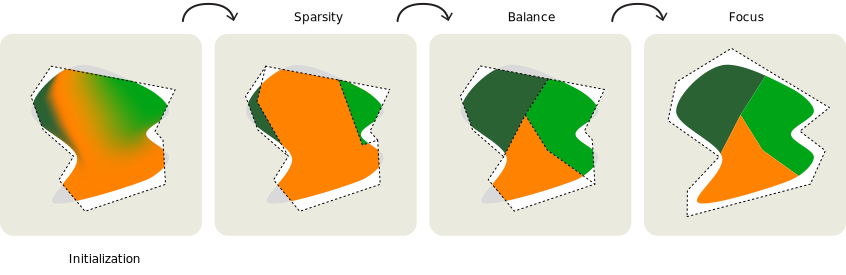
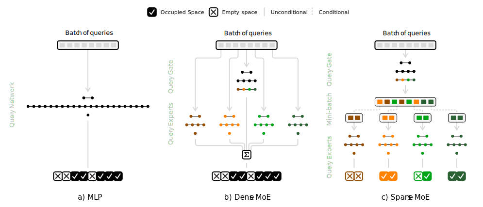
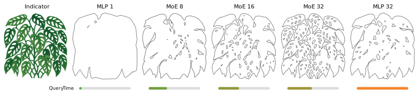
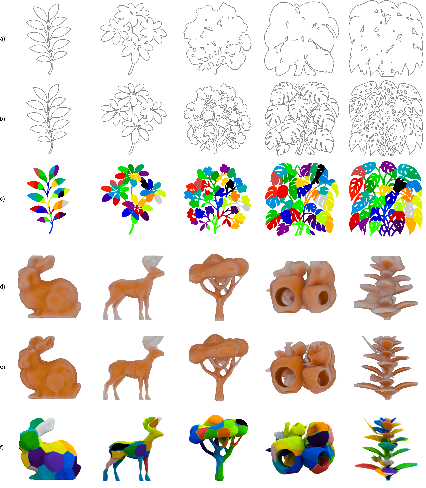
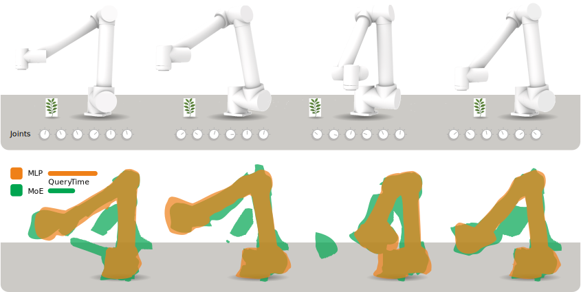

J. Überall1, T. Ritschel1,2 1University College London, United Kingdom 2Meta Reality Labs, USA
Given an indicator function, here in 2D, that is 1 for occupied space and 0 otherwise (a), previous work has shown to approximate the indicator with a neural network such that it is strictly conservative (b). That method has no false negatives, i.e. it will never return 0 if the indicator was 1, but it will do so at the expense of a couple of false positives e.g. some holes in the leaves are missing. Essentially, speed is traded against some false positives. This combination of properties is visualized as bars below each figure. One can improve the quality, such that the holes between leaves are resolved, but at the expense of slower speed (c). Our method achieves both better quality and better speed (d), by using multiple independent bounding expert networks and a learned gating to control which one needs to run where.
We present a hierarchy of networks to perform bounding queries against high-dimensional geometric assets such as required in ray-tracing or collision detection. Using a mixture of experts, popularized in the context of large language models, we learn a spatial decomposition together with bounding volumes end-to-end. We demonstrate improvements in query speed and accuracy: instead of executing one monolithic network, only a subset of networks is evaluated, analogous to a bounding volume hierarchy traversal that visits only a fraction of internal nodes. This decomposes the global optimization objective into many smaller and simpler sub-problems distributed among all sub-networks. Unlike prior work, the spatial decomposition is not predefined and static (e.g. a grid), but emerges as a byproduct of the bounding optimization, allowing for non-trivial higher dimensional decompositions tailored to the task. The benefit of using neural bounding queries is that they extend naturally to higher-dimensional domains such as time, configuration space, or latent control spaces. We discuss the design choices required for branched learning and execution and evaluate our approach against alternatives.
Method

There are three training objectives for a MoE after initialization (a): the experts should not overlap and rely on each other such that the top-1 expert must be sufficient enough for a query (b); the expert distribution across the space to bound must be uniform (c); the model must be conservative such that it has strictly zero false negatives (d).

Comparison of flow in MLPs, dense MoEs and sparse MoEs, from left to right. The MoE allows for sparse queries, by forward passing a query only through the single, top-1 expert (c). This uses only a fraction of the MoE's total parameters, such that a sparse inferred MoE will use fewer parameters during a forward pass by design when comparing to a monolithic MLP (a). Yet, during training the MoE is inferred dense, which evaluates every query with every expert to explore all routes and have best optimization control over the model (b).
Results

Scaling the number of experts utilized by the MoE partitions space further and further (left to right). But still, the MoE only requires a single expert to process a query. Meaning, the MoE can increase modeling complexity with minimal increased query time. The MLP can only scale monolithic such that query time increases at best linearly. We indicate the number of experts for each MoE as well as the equivalently sized MLP for a MoE with \numberOfExperts experts in the name above each figure. Increasing the expert pool lowers the bounding effort for each expert, as its region to bound becomes smaller and eventually less complex. Yet, the space partition to solve by the gate becomes more difficult.

Comparing bounding predictions for varying complexities (left to right) of indicators learned with equally sized (~20K parameters) MLP (a,d) and MoE (b,e) in 2D and 3D. We highlight the space partitioning in the MoE by color coding each expert (c,f). All predictions are strictly conservative.

Neural bounding of a six-dimensional robot control system in 3D space. The bounding expert hierarchy maps a nine-dimensional input to a binary bounding response. The top row visualizes four different 6D-configurations (knob controls) of the robot arm moving from some pose to a pose where the end-effector is close to a target. The bottom row visualizes the learned bounding of MLP and MoE while highlighting overlapping parts in dark.